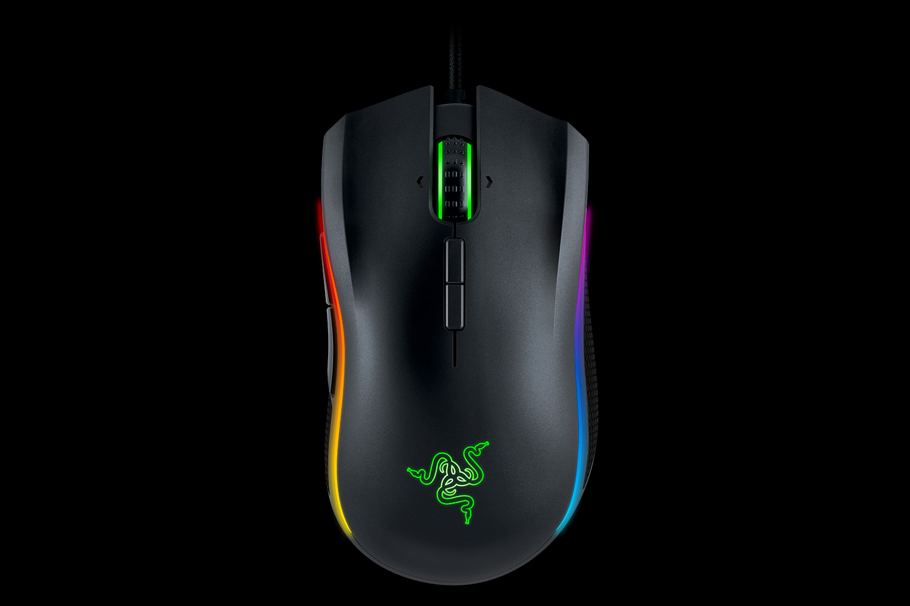
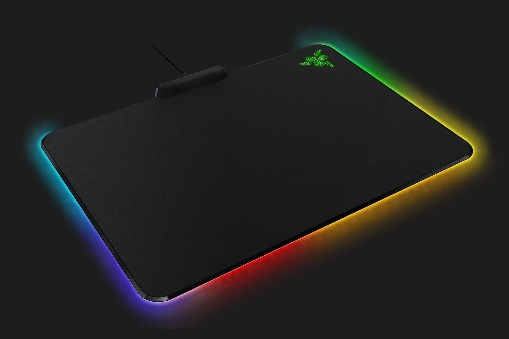

Mäuse
Razer Mamba Tournament Edtion
Die Razer Mamba Tournament Edtion beinhaltet den weltweit präzisesten Gaming-Maussensor der Welt
mit 16.000 DPI! Außerdem besitzt diese Gaming Maus eine volle RGB Beleuchtung,
die mit Razer Synapse konfiguriert werden kann.
Ihr momentaner Preis beträgt 99,99 Euro.
Razer Firefly
 Das Razer Firefly bietet einer der besten Micro-Textured Finishes auf einem Mauspad Weltweit!
Das Mauspad lässt sich Problemlos mit allen Mäusen bedienen, bietet aber
besondere Eigenschaften, wenn man es mit einer Razer Maus bedient.
Außerdem bietet das Razer Firefly eine volle RGB-Beleuchtung, die sich mit Razer Synapse konfigurieren lässt.
Ihr momentaner Preis beträgt 74,99 Euro.